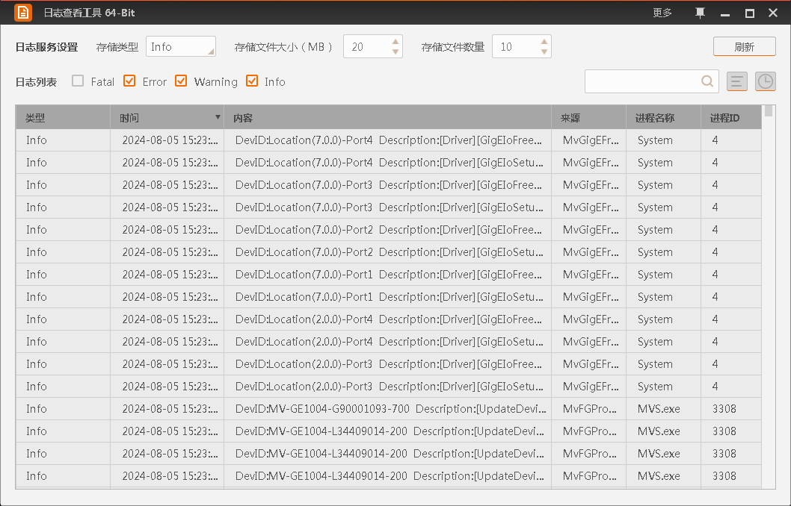

日志查看工具
查看日志
日志查看支持多种便捷操作，方便快速定位具体信息。
日志查看工具可通过上方的日志服务设置对相机和采集卡的SDK日志服务进行设置。
- 存储类型
-
可下拉选择需要存储的SDK日志类型。
不同类型的SDK日志类型等级不同，选择的日志类型等级越高，其以下等级的日志类型都会进行存储。
SDK日志类型等级如下： Fatal ＜ Error ＜ Warning ＜ Info ＜ Debug ＜ Trace。
- 存储文件大小（MB）
-
可设置单个文件的大小，单位为MB。默认文件大小为10 MB，范围为1~1000 MB。
- 存储文件数量
-
可设置工具最多能够存储的SDK日志文件数量。
日志以设置的更新间隔时间进行刷新，同时也可通过右上角的刷新按钮进行手动刷新。
日志分为Fatal、Error、Warning、Info四种类型，可通过左上角的日志列表进行勾选来决定日志查看工具中是否显示。
在日志信息较多的情况下，可通过右上角的搜索功能对内容进行查找。输入关键字后单击即可。
目前搜索功能仅支持对日志中的内容进行关键字搜索，对于类型、时间和来源的搜索暂不支持。
每条日志信息包含类型、时间、内容、来源、进程名称和进程ID。用户可通过日志查看工具右上角的 设置日志信息显示的内容。
设置日志信息显示的内容。
工具支持查看不同时间范围内的日志，单击右上角的，可设置想查看的时间范围。
单击日志列表中的时间表头，您可将日志以时间的方式进行排序，可按降序或者升序的方式进行排序，默认为降序。
-
导出所有日志：可将显示的所有日志通过txt文件的方式导出到PC上，导出路径可以自行设置。
-
导出所选日志：可将选中的日志通过txt文件的方式导出到PC上，导出路径可以自行设置。
-
复制所有日志：可将显示的所有日志复制到文本文件中。
-
复制所选日志：可将选中的日志复制到文本文件中。
-
清空日志：可将显示的所有日志清空。
-
通过鼠标和键盘Shift键可以完成列表中连续区域的多选操作。
-
通过鼠标和键盘Ctrl键可以完成列表中非连续区域的多选操作。
日志查看工具可以设置置顶功能，通过日志查看工具右上角的设置即可。

图 1 查看日志